Control Valve Body Assembly Assemble
Control Valve Body Assembly Assemble
Upper to Lower Control Valve Body Assembly Assemble
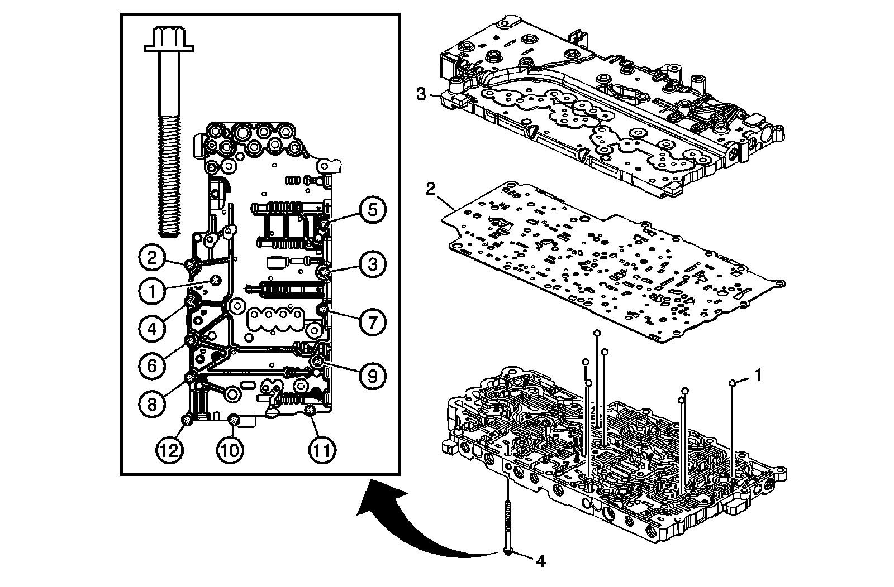
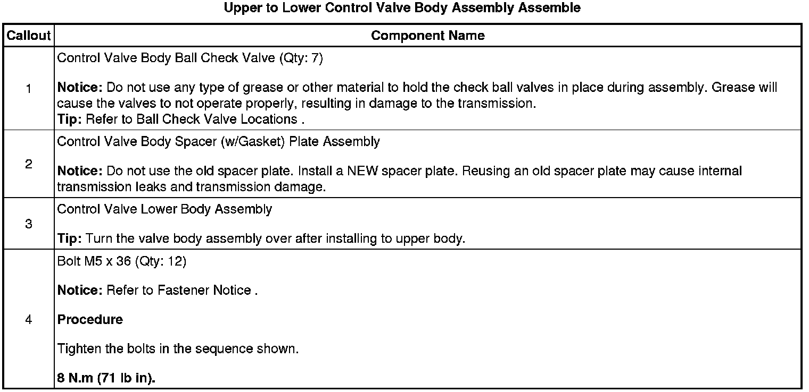
Filter Plate Installation
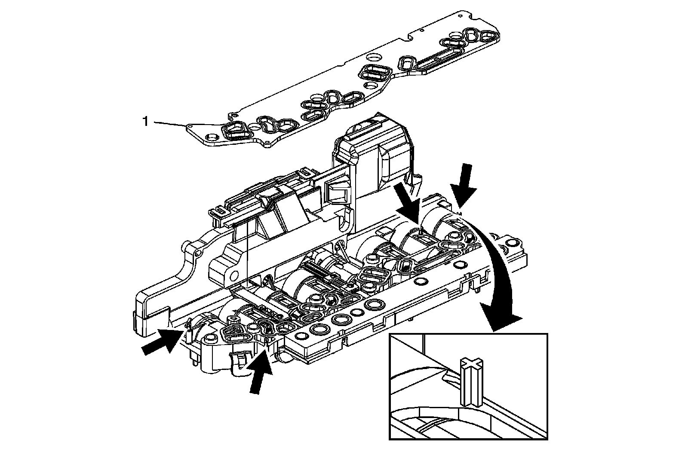
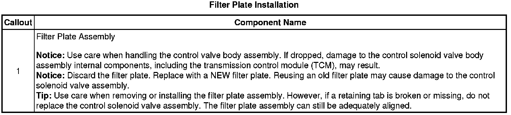
Control Solenoid Valve Assembly Installation
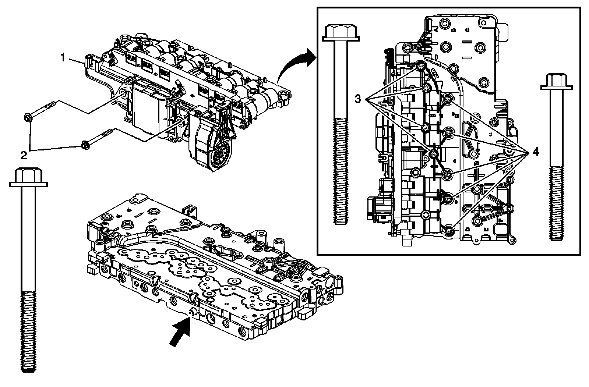
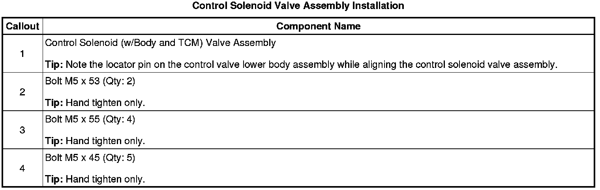
Manual Shift Shaft Position Switch Installation
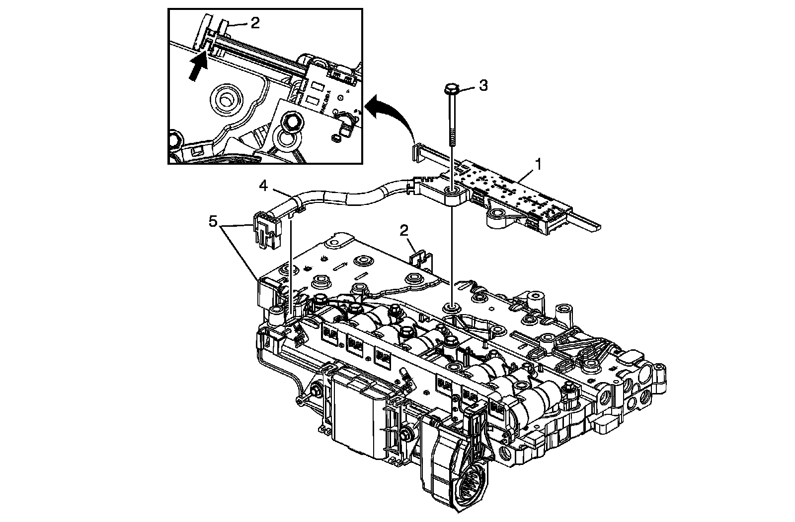
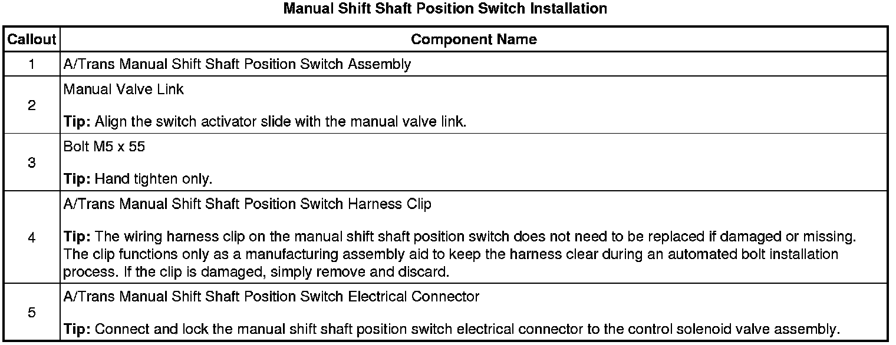
Valve Body, Control Solenoid Torque Sequence
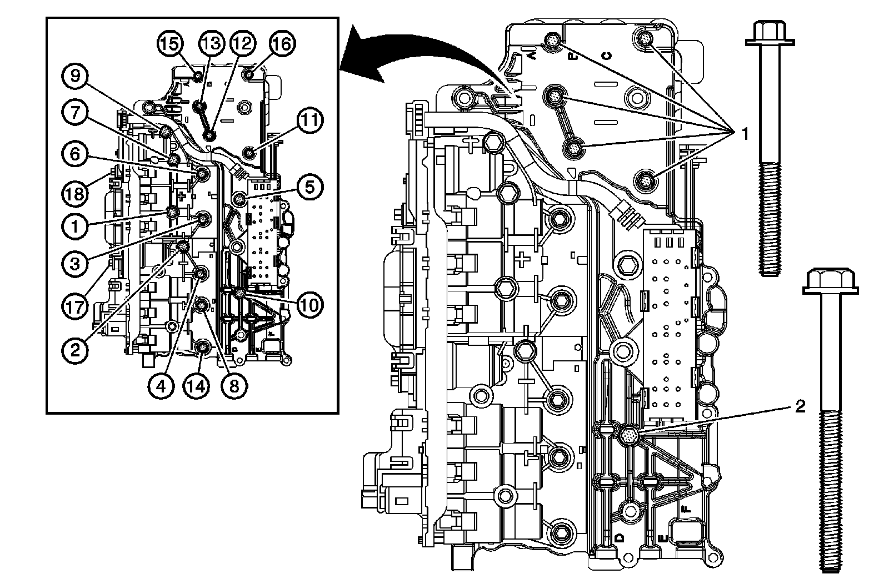
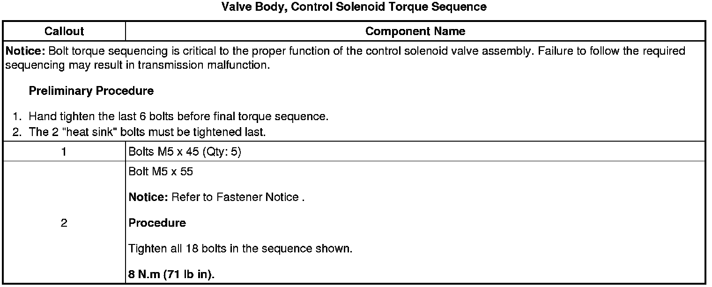
Control Solenoid Valve Assembly Contact Gap Inspection
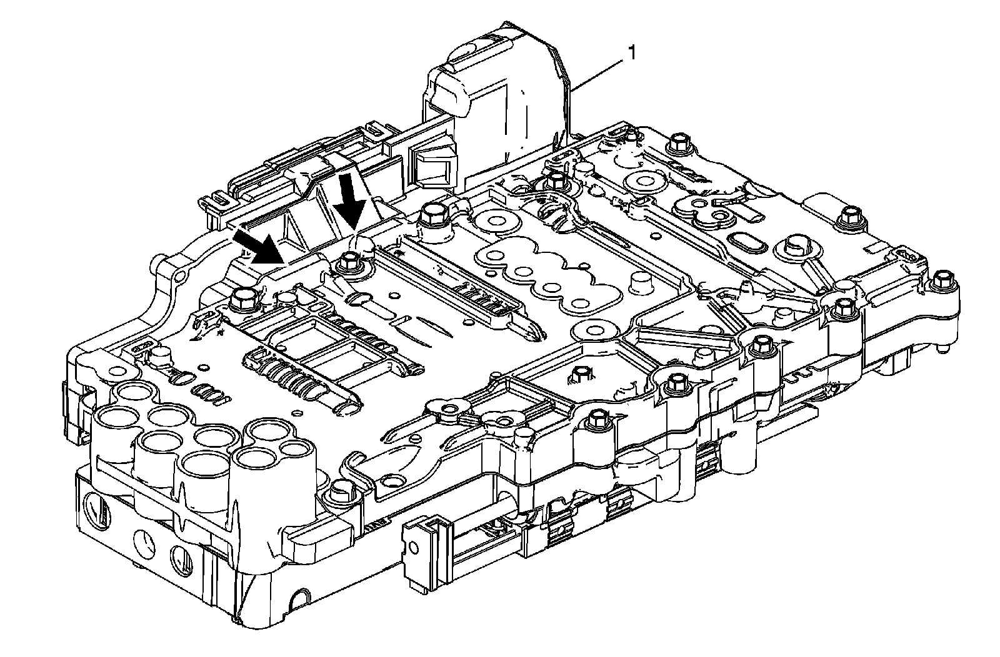
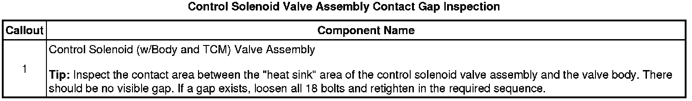
Input and Output Speed Sensor Assembly Installation
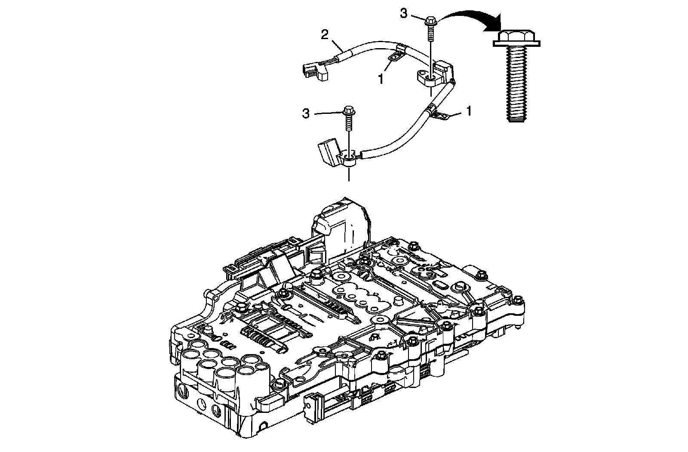
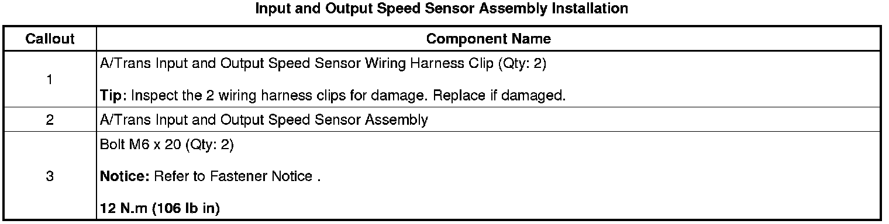